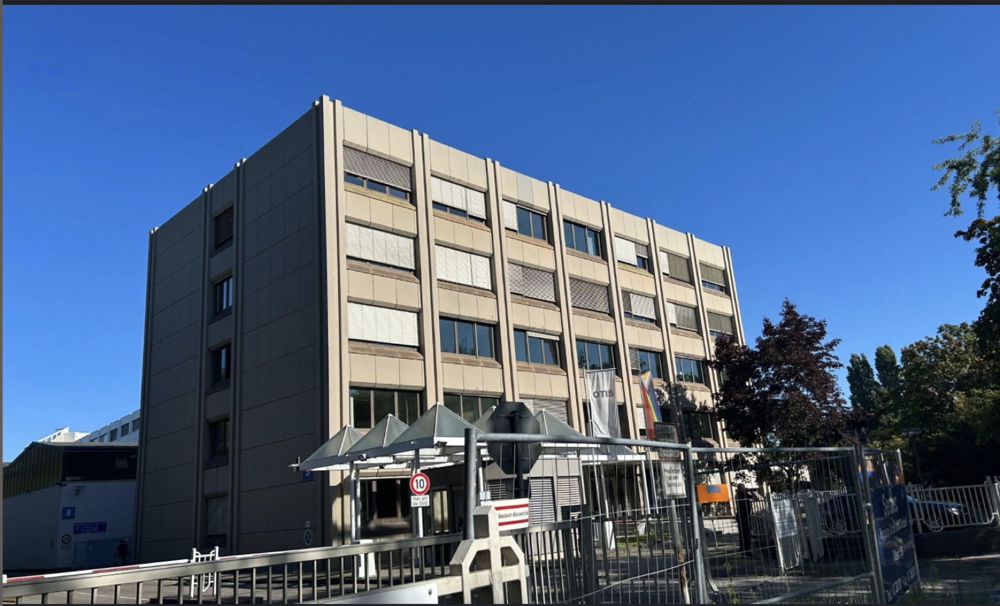
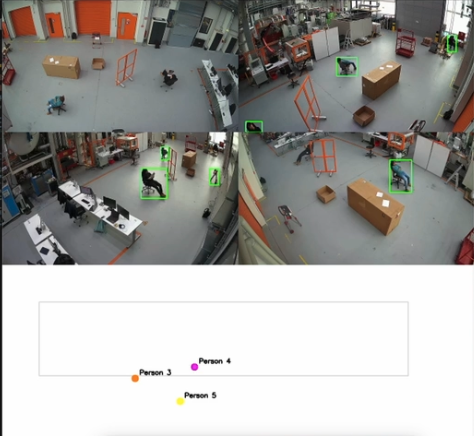
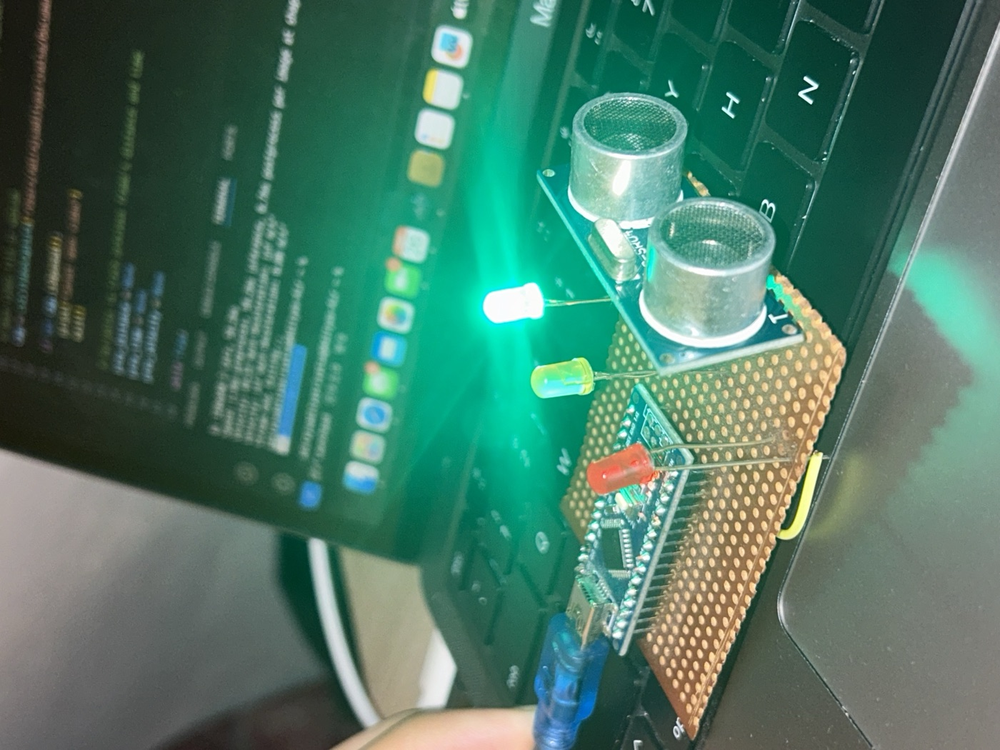
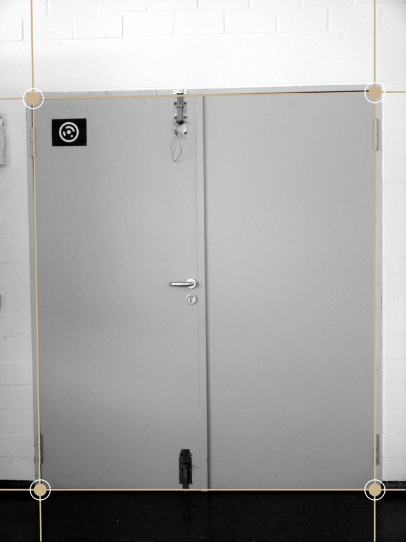
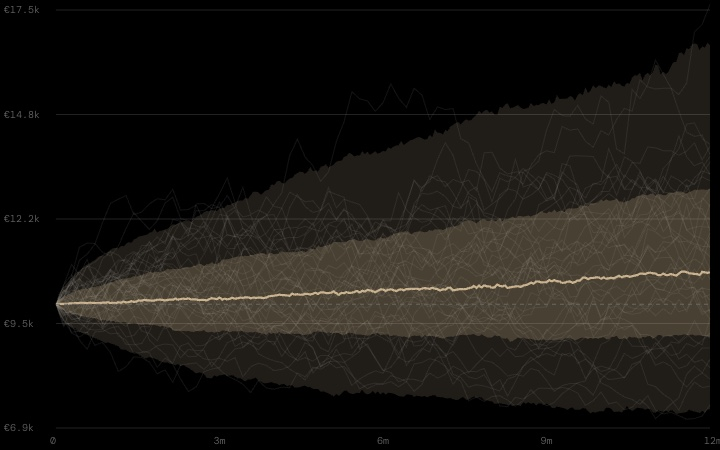
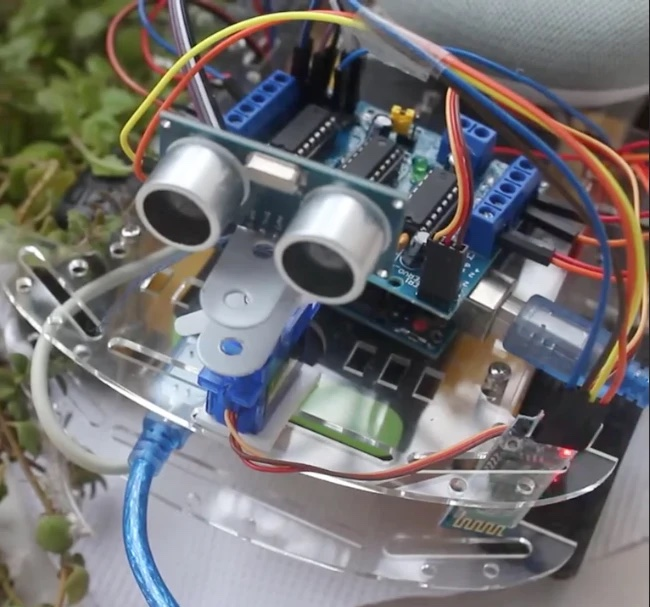

Things I've built
Six projects across industrial ML, computer vision, sensor fusion, classical image processing and quantitative ML. Each page explains how the code works, with live demos you can try in the browser.

Root-Cause Detection from CAN Traces
My OTIS internship project: an ML pipeline that diagnoses elevator faults from CAN-bus traces with 96% accuracy, explained with SHAP.

Multi-Camera Tracking
Four CCTV feeds fused into one top-down map with consistent IDs. YOLOv8, homography, DBSCAN and a Hungarian-matching tracker. Prototype for Sentics GmbH.

ML Automotive Safety
A low-cost collision-warning retrofit for older cars. Camera + YOLOv8 and an ultrasonic Arduino unit, driven by the Berkeley PATH warning model.

Computer Vision Algorithms
Eight classical computer-vision modules in MATLAB, from camera geometry and Fourier analysis to an industrial door-gap detector.

Stock Alpha
A blind-validated S&P 500 momentum screen with a web app and an in-browser Monte Carlo simulator. The 38-feature ML model was tested blind and dropped.

Obstacle-Avoidance Car
An Arduino Uno car that detects obstacles and steers around them on its own, and can also be driven from a custom app. Presented at Vision Engineering Fest.
All the code is on GitHub
Every project, plus earlier versions like Stock_analysis and Outperform-Stock.